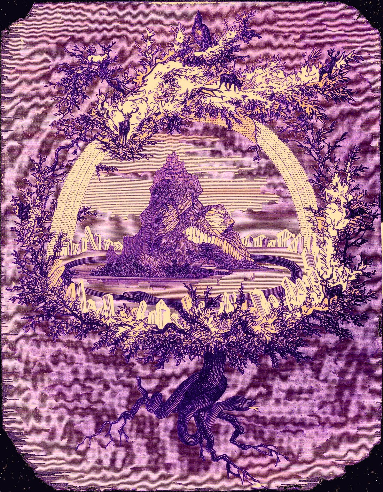

Definition
What "non-ordinary reality" means
Ordinary reality runs on linear time, solid matter, and predictable cause-and-effect. Non-ordinary reality is the name given to everything that doesn't play by those rules — and three very different disciplines each claim a piece of it.
A parallel, navigable world
In shamanic traditions, non-ordinary reality isn't a metaphor for imagination — it's treated as an objective realm a trained practitioner can enter, move through, and return from with information.
A state the ego can't hold
Transpersonal psychology studies it as an altered state of consciousness: the ego's usual defenses loosen, and material the waking mind normally filters out becomes available.
The reality behind the reality
Since Kant, philosophers have argued that everyday experience is itself a construction — which raises the question of what, if anything, sits underneath it.
Origins · 1968
Castaneda and the "man of knowledge"
The specific phrase entered Western culture through anthropologist Carlos Castaneda's The Teachings of Don Juan, which claimed to document his apprenticeship under a Yaqui shaman.
Don Juan Matus, the teacher at the center of Castaneda's books, is described as training perception itself rather than belief. Two ideas from that account still frame how the topic gets discussed today.
The assemblage point is the idea that ordinary perception is anchored to one narrow position, and that shifting it opens entirely different bands of experience. "Stopping the world" is the practice of interrupting the internal monologue that constantly narrates and organizes what you perceive — the habit Castaneda says keeps people locked into a single reality.
Castaneda split existence into two halves: the Tonal, the organized, nameable, everyday world, and the Nagual, the formless and non-ordinary realm beyond it.
His books sold in the millions and shaped 1970s counterculture, but the scholarly consensus since has shifted: most anthropologists now treat the apprenticeship narrative as invented rather than documented fieldwork. The vocabulary outlived the credibility — "non-ordinary reality" is still the standard term precisely because Castaneda made it stick.
Anthropology
The shamanic journey
In core and traditional shamanism, non-ordinary reality is treated as the "spirit world" — a real destination visited to retrieve information, recover lost aspects of a patient, or consult guides.
Earthy & instinctual
Associated with animal guides, nature spirits, and ancestral knowledge — often described as dense, textured, and alive.
A spiritual mirror
The reflection of ordinary physical reality, consulted for information about real, present-day events and people.
Ethereal & instructive
A crystalline realm associated with teachers and higher-order insight, reached at the far end of the journey.
Entry is induced through repetitive sonic driving — drumming or rattling at roughly four to seven beats per second — along with fasting, sleep deprivation, ecstatic dance, or entheogenic plants such as ayahuasca or peyote.
Psychology
Grof: hylotropic and holotropic
Psychiatrist Stanislav Grof, a founder of transpersonal psychology, translated shamanic concepts into a clinical vocabulary built around two modes of consciousness.
Hylotropic (matter-oriented) describes ordinary waking consciousness — the mode built for navigating physical survival. Holotropic (wholeness-oriented) describes the non-ordinary mode reached through breathwork, meditation, or psychedelics, in which the ego's usual defenses lower and time and space stop feeling absolute.
Grof argued holotropic states carry a kind of "inner radar" — they tend to surface exactly the psychological material, including repressed trauma and what Jung called the collective unconscious, that most needs to be processed.
He was equally clear about the risk. Entering a non-ordinary state requires a resilient ego boundary to return safely from. When the shift happens too fast — through overwhelming stress, trauma, or unguided psychedelic use — Grof described the result as a spiritual emergency: a state that can resemble psychosis as consensual reality slips and unconscious material floods in faster than it can be integrated.
This is the throughline of the clinical literature on non-ordinary states: the same mechanism that makes them useful for healing is what makes an unsupported descent risky.
Neuroscience
The entropic brain
Where transpersonal psychology theorizes, modern neuroimaging measures. Psychopharmacologist Robin Carhart-Harris's Entropic Brain Hypothesis looks at what happens when the brain's normal regulatory systems power down.
Ordinary waking consciousness is highly ordered, largely maintained by the Default Mode Network (DMN) — the network associated with ego, self-narrative, and rigid, habitual thinking. It's the neurological substrate of what feels like "you."
Under psilocybin and comparable states — including deep meditation and trance — DMN activity quiets. Carhart-Harris describes the result as a shift toward higher entropy: less filtering, more disorder, and a richer, less constrained experience of consciousness he calls a "primary state." The same model is now being applied clinically to treatment-resistant depression.
DMN suppression describes the mechanism, but not why some people seem to live closer to that threshold all the time. Dopamine looks like a large part of the answer — covered further down this guide.
Evolutionary cognition
Perception as a survival interface
Cognitive scientist Donald Hoffman approaches non-ordinary reality through evolutionary math rather than mysticism, and arrives somewhere strange: seeing the truth is a losing strategy.
Hoffman, working with mathematician Chetan Prakash, formalized this as the Fitness-Beats-Truth (FBT) theorem. In evolutionary game-theory simulations, organisms tuned to perceive objective reality accurately are consistently outcompeted by organisms tuned only to "fitness payoffs" — cues that just keep them alive, regardless of whether those cues resemble the truth.
His analogy is a computer desktop: a folder icon lets you use a file without seeing the code underneath. Hoffman argues space, time, and physical objects work the same way — a simplified interface evolution built for survival, not a direct window onto whatever the universe actually is.
| Strategy | What it perceives | Evolutionary outcome |
|---|---|---|
| Truth | The complex, objective structure of the world | High computational cost — driven to extinction |
| Fitness | Only what's relevant to survival | Cheap and fast — evolutionarily stable, dominates |
A related model from neuroscientist Karl Friston, the Free Energy Principle, arrives at a similar place from a different direction: the brain never has direct access to reality, only a running best-guess model built to minimize surprise.
Individual differences · Cognitive science
Who crosses over, and why
If non-ordinary reality is a shared human capacity, the obvious next question is why some people report it constantly, most people almost never, and a few end up hospitalized for it. Six overlapping theories try to answer that.
The baseline phenomenon has a name: apophenia, coined in 1958 by German psychiatrist Klaus Conrad to describe the "unmotivated seeing of connections" he observed in the earliest stages of schizophrenia — a specific feeling that unrelated things are meaningfully linked. Conrad was describing a clinical population, but the capacity itself is universal. Skeptic and science writer Michael Shermer later gave the everyday version a friendlier name, patternicity: the tendency to find meaningful patterns in meaningless noise, present in some degree in every functioning human brain. Non-ordinary reality, on this view, isn't a separate kind of experience — it's patternicity turned up past its usual setting.
-
Evolutionary
The threshold was never meant to be accurate
This connects directly to Hoffman's interface theory above: if evolution favors fast, cheap fitness cues over costly truth, then false positives — seeing a predator, a face, a pattern that isn't there — are simply cheaper mistakes than false negatives. Humans may be over-tuned toward finding patterns by design, not by accident.
-
Neurochemical
Dopamine moves the threshold
Dopamine is thought to sharpen the brain's signal-to-noise ratio — but a 2010 study by Peter Krummenacher, Christine Mohr, Helene Haker, and Peter Brugger found that giving healthy adults levodopa (which raises dopamine) made self-described skeptics start seeing meaningful patterns in scrambled, meaningless stimuli almost as readily as self-described "believers" already did. Earlier work by Brugger's group tied this specifically to the right hemisphere, which stores associations more loosely than the left. Raise dopamine, and the threshold for calling something "meaningful" drops — for anyone.
-
Genetic
A heritable dial, not just a state
If dopamine sets the threshold, some people may inherit it pre-lowered. Psychiatrist C. Robert Cloninger's temperament model treats Novelty Seeking — impulsive, exploratory, quick to chase new stimuli — as a dopamine-linked trait with a genetic component. In 1996, Richard Ebstein and colleagues reported an association between a specific variant of the dopamine D4 receptor gene and Novelty Seeking scores in healthy adults. The finding made headlines as an "adventure gene," though it's worth noting plainly: replication attempts since have been mixed, and the honest current position is that this gene is one small contributor at most, not a master switch.
-
Trait-level
Three overlapping personality dimensions
Psychologist Gordon Claridge's model of schizotypy treats traits like unusual perceptual experience and magical ideation as a continuum running through the entire general population, not a binary switch that's only "on" in clinical illness. Parapsychologist Michael Thalbourne's transliminality — how easily material crosses the threshold between unconscious and conscious — was built from the finding that paranormal belief, mystical experience, magical ideation, and creative personality all statistically cluster together as one underlying factor. A third, older construct converges on the same territory: Auke Tellegen and Gilbert Atkinson's 1974 trait of absorption, the capacity to become so fully engaged in an imagined or perceptual experience that it temporarily overrides ordinary reality-monitoring — originally identified because it predicted hypnotic susceptibility, and since linked to meditative depth and mystical experience as well.
-
Situational
Circumstance, not just character
It isn't only about who you are. In a 2008 Science paper, Jennifer Whitson and Adam Galinsky experimentally stripped participants of a sense of control and found illusory pattern perception — seeing images in noise, connecting unrelated stock movements, endorsing conspiracy theories — increased in almost anyone, regardless of baseline trait. Losing control appears to lower the threshold on its own.
-
Experimental
You can induce it in a healthy lab subject in hours
The clearest evidence that the threshold is universal rather than reserved for unusual minds comes from Donald Hebb's sensory-deprivation program at McGill in the 1950s. Researchers W.H. Bexton, Woodburn Heron, and T.H. Scott placed ordinary, psychologically healthy volunteers in a cubicle with translucent goggles, cotton gloves, and a droning fan to flatten sight, touch, and sound to near-uniformity. Within hours, subjects who had shown no prior signs of unusual perception began reporting vivid, unprompted hallucinations. Strip the ordinary world of enough patterned input, in other words, and the pattern-detecting system starts generating its own — which is close to a laboratory replication of what fasting, sleep deprivation, and sensory overload are already doing in a drumming circle or on a windswept tree.
There's a sharper edge to this than pure curiosity. A 2003 study by Shelley Carson, Jordan Peterson, and Daniel Higgins at Harvard found that people with reduced latent inhibition — a normally unconscious filter that screens out stimuli already judged irrelevant — showed significantly higher lifetime creative achievement, but only when paired with high cognitive capacity. The same failure to filter that destabilizes an unprepared mind appears to fuel exceptional creative output in a mind equipped to manage the flood. Claridge had already made a version of this argument for schizotypy directly: intelligence looks like it moderates whether a predisposition toward psychosis expresses itself as illness or as unusually original thought.
Put together, these six theories point toward one argument rather than six separate ones. Non-ordinary reality isn't a different kind of mind switching on. It's the same pattern-detecting system everyone already has, running with its threshold turned down — by heredity (a dopamine-linked gene variant, still tentative), by durable trait (schizotypy, transliminality, absorption), by neurochemistry (dopamine tone in the moment), or by circumstance (uncertainty, loss of control, or the flattened sensory world of a McGill cubicle). Read this way, the shamanic techniques covered earlier — rhythmic drumming, fasting, sleep deprivation — and Odin's nine-night ordeal on Yggdrasil aren't separate cultural curiosities. They're independently invented technologies for deliberately turning that same threshold down, arrived at by traditions that never shared a coastline, and confirmed in a Canadian psychology lab that wasn't trying to study mysticism at all. Grof's warning about spiritual emergency, from earlier in this guide, is the other half of the argument: turn that threshold down faster than a person's ego structure can handle, and the same mechanism that produces mystical insight in a prepared mind produces a psychiatric crisis in an unprepared one.
Philosophy · 1781
Kant: Phenomena and the Noumenon
No framework draws a harder line between ordinary and non-ordinary reality than Kant's Critique of Pure Reason. He argued the mind doesn't passively receive the world — it actively builds it.
Before you experience anything, Kant claimed, your mind has already run it through fixed processing: the forms of sensibility (space and time aren't out in the universe — they're the format your mind imposes on raw data) and twelve categories of understanding, including cause-and-effect. Only what survives that processing becomes "ordinary reality."
Phenomenon
The world as it appears — filtered through space, time, and causality. This is the domain of science, math, and everyday experience. Not an illusion, but heavily curated.
Noumenon
The world as it is in itself — the "thing-in-itself," entirely independent of any observer. Because it exists outside space and time, Kant argued the human mind is structurally incapable of directly knowing it.
Two readings
What later philosophers think Kant meant
-
Traditional reading
Two-World Interpretation
Championed by Schopenhauer and later P.F. Strawson: Phenomena and Noumena are literally two separate universes, one causing the other. Critics note the contradiction — Kant forbade applying "causality" to the Noumenal realm, yet this reading requires it.
-
Modern reading
Two-Aspect Interpretation
Favored by contemporary scholars like Henry Allison: there's only one reality, viewed two ways. Like a photograph versus its raw binary code — the Noumenon isn't a parallel dimension, just the same object considered apart from perception.
"Ought implies can." If the moral law demands a choice from you, that alone is proof you're capable of making it. Kant's argument for free will, Critique of Practical Reason, 1788
Kant needed the Noumenal realm for a reason beyond metaphysics: it protects free will. Bodies and brains sit in the Phenomenal world, bound by strict cause-and-effect — if that's all we are, morality is an illusion, no different from blaming a boulder for rolling downhill. But because the Noumenal realm sits outside causality entirely, Kant argued it's the one place an uncaused, free choice can originate. When you act purely out of duty rather than impulse, on this view, your Noumenal self is reaching through the veil and rewriting the physical chain of cause-and-effect.
Philosophy · 1818
Schopenhauer's answer: the Will
Schopenhauer accepted Kant's basic split but rejected the claim that the Noumenon is permanently unknowable — and found the crack in Kant's own logic to prove it.
Kant spoke of "noumena," plural — but plurality requires space and time to separate one thing from another, which the Noumenal realm supposedly lacks. Schopenhauer concluded ultimate reality must be one single, undivided force, not a set of separate hidden objects.
His breakthrough was to stop looking outward. You experience your own body two ways: as an object in space (a Phenomenon), and from the inside, as raw striving and desire — a felt Will with no cause-and-effect chain attached. Schopenhauer treated that inner drive as the closest thing to direct contact with the Noumenon available to a human mind, and then took the radical step of generalizing it: the Will inside you is the same Will driving a sunflower toward the sun, a magnet toward iron, gravity toward the earth. Because that Will has no ultimate goal beyond its own continuation, Schopenhauer's philosophy is famously pessimistic — desire satisfied only produces boredom, which restarts the cycle.
| Concept | Kant | Schopenhauer |
|---|---|---|
| Ordinary reality | The Phenomenal world | The world as representation |
| Ultimate reality | The Noumenon | The Will |
| Knowable? | Strictly unknowable | Knowable through inner bodily awareness |
| Plurality | Implied many "things-in-themselves" | Emphatically one, indivisible force |
| Character | Rational but inaccessible | Blind, restless, the root of suffering |
Esoteric & mystical traditions
Older maps of the same territory
Long before cognitive science, mystical and esoteric traditions were drawing their own boundaries between ordinary and non-ordinary reality — several of which Kant engaged with directly.
Sufi mysticism — the Mundus Imaginalis
Philosopher Henry Corbin, translating 12th-century Sufi mystic Ibn 'Arabi, argued Western thought wrongly divides everything into "physical" or "imaginary." Ibn 'Arabi's Alam al-Mithal is a third, objective layer of reality where spirits take on form — accessed not by ordinary sight but by what Corbin called the "active imagination," treated as a genuine perceptual organ rather than a synonym for fantasy.
Hermeticism & alchemy — "as above, so below"
The Hermetic tradition holds that physical matter is the densest, lowest vibration of cosmic thought, and that the non-ordinary, divine realm (the macrocosm) shares its exact structure with the human world (the microcosm). Alchemical "transmutation" of lead into gold was widely understood as a coded description of purifying ordinary consciousness into an illuminated, non-ordinary state.
Kabbalah & Neoplatonism — the emanations
Both trace reality as a cascade downward from an infinite, formless source (Ein Sof in Kabbalah; the One in Plotinus's Neoplatonism) through successive filters — the Sephirot on the Tree of Life — each level denser and more fragmented than the last. Ordinary physical existence, Malkuth, sits at the very bottom. Mystical practice is the deliberate climb back up.
Swedenborg — and the book Kant wrote against him
Scientist-turned-mystic Emanuel Swedenborg mapped the afterlife with clinical precision after a series of waking visions, and gained credibility after accurately describing a distant fire in real time from 300 miles away. Kant, initially fascinated, was ultimately so unconvinced by Swedenborg's books that he anonymously published Dreams of a Spirit-Seer (1766) attacking him — the essay that helped Kant work out the argument later formalized as the unknowable Noumenon: spirits are by definition immaterial, and a mind built to perceive matter in space cannot perceive the immaterial.
Bergson — pure duration
Henri Bergson argued clock time is an intellectual convenience, not reality itself — a way of slicing continuous experience into measurable units. True reality, which he called durée (duration), is a fluid, indivisible flow accessible only through intuition rather than measurement.
Gurdjieff & Ouspensky — waking sleep
This early-20th-century esoteric system, documented in Ouspensky's In Search of the Miraculous, holds that ordinary human life is a form of literal hypnotic sleep — mechanical reaction mistaken for awareness. Reaching "objective" non-ordinary reality requires a demanding practice of self-observation aimed at dissolving the false, automatic personality.
William James — pure experience
In his later, less-cited philosophical work, James argued the split between "observer" and "observed" is itself a fabrication layered onto something more basic he called Pure Experience — a substrate that is neither strictly mental nor strictly physical, and in which subject and object aren't yet divided.
Norse cosmology · Poetic & Prose Edda
Yggdrasil, the world tree
Long before "assemblage point" or "Noumenon," Old Norse cosmology had its own name for the structure holding ordinary and non-ordinary reality together: an immense ash tree whose branches and roots physically connect every plane of existence.

Yggdrasil appears in the two main sources for Norse mythology: the Poetic Edda, a collection of older oral poems written down in 13th-century Iceland, and the Prose Edda, compiled around 1220 by the Icelandic chieftain Snorri Sturluson. Between them, the poems Völuspá, Grímnismál, and Hávamál, and Snorri's Gylfaginning, give the fullest picture of the tree.
Its branches reach over the nine worlds and into the heavens; its three roots each reach a different well. One root passes into Ásgarð, the realm of the gods, to Urðarbrunnr, the Well of Fate — tended daily by the three Norns, who water the tree with mud and spring water to keep it from decaying. A second root reaches Mímisbrunnr, the Well of Wisdom, where Odin traded an eye for a single drink. A third reaches down into Niflheim and the roaring spring Hvergelmir, gnawed at constantly by the serpent Níðhöggr.
Three roots, three wells
A tree that holds nine worlds together
-
Root one — Urðarbrunnr
The Well of Fate
In Ásgarð, home of the Æsir gods. The three Norns — Urðr, Verðandi, and Skuld — draw water here to sustain the tree and are said to carve the fates of gods and mortals alike.
-
Root two — Mímisbrunnr
The Well of Wisdom
Guarded by the being Mímir. Odin gave up an eye for the right to drink from it — a deliberate, permanent trade of ordinary sight for non-ordinary insight.
-
Root three — Hvergelmir
The roaring spring
Source of the world's rivers, deep in the mist-realm of Niflheim. The dragon-serpent Níðhöggr gnaws at this root without end.
A tree full of tenants
An unnamed eagle perches at the crown, with a hawk sitting between its eyes. Four stags graze the branches, and the goat Heiðrún crops the foliage to produce the mead that fills the drinking horns of Valhalla. Running the length of the trunk is Ratatoskr, a squirrel whose entire mythic function is to carry insults back and forth between the eagle at the top and Níðhöggr at the bottom — a small, almost comic detail that nonetheless makes the tree a fully occupied, vertically connected ecosystem rather than a static diagram.
Odin's ordeal on the tree
In Hávamál, Odin describes hanging on a windswept tree — understood to be Yggdrasil itself — for nine nights, wounded by his own spear and given to no god but himself, before the runes rose up to him from below. Several scholars of Norse religion have read this episode as a description of a shamanic initiatory ordeal: a deliberate, self-inflicted crossing into non-ordinary reality undertaken specifically to bring knowledge back.
Historian of religion Mircea Eliade — cited earlier for his cross-cultural survey of shamanic technique — treated world trees like Yggdrasil as a textbook axis mundi: a world axis that physically links sky, earth, and underworld, structurally identical to the shamanic Lower, Middle, and Upper Worlds covered above, right down to a spring at the base and a bird of prey at the crown. Seen this way, Yggdrasil isn't a separate tradition so much as the same three-tiered cosmology this guide has already traced through Siberian and Amazonian shamanism, redrawn in Old Norse.
A modern parallel
The digital Noumenon
You don't need drumming or fasting to find a modern, anonymized example of Kant's split — it shows up every time someone drops from a graphical interface into a terminal.
Most computer use stays entirely Phenomenal: a desktop, icons, and windows — reality pre-filtered into something legible at a glance. Opening a shell and writing raw scripts is a small act of piercing that veil. You stop seeing folders and start seeing pathways, permissions, and execution — the system's own version of a Noumenal layer, normally hidden by design.
A public, MIT-licensed repository extends the same idea outward. It's a non-physical meeting ground — closer to Henry Corbin's Mundus Imaginalis than to any office — where contributors who may never share a timezone build a shared structure out of nothing but logic.
a1b2c3d docs: clarify the assemblage point
e4f5g6h feat: add noumenal render path
i7j8k9l chore: license under MIT
$ ▌
Kant's Categorical Imperative maps onto this surprisingly well. Ask what happens if every developer universalized the maxim "hide your code" — the shared foundation of software collapses, and everyone re-invents the same wheel forever. Open-source releases can be universalized without contradiction; the system accelerates instead. And where the GPL enforces future sharing by legal obligation, an MIT license grants the freedom without coercion — arguably the more Kantian move, since Kant held that a truly moral act has to be freely chosen, not compelled.
Decentralized, node-based systems echo Schopenhauer instead of Kant: no single command center, just a distributed "Will" of independent participants each striving toward the same emergent structure — closer to a blind, decentralized drive than a managed hierarchy.
Further reading
Sources & starting points
Primary texts referenced throughout this guide, organized by discipline. Titles only — search your library or a bookseller for editions.
Anthropology & shamanism
- Carlos Castaneda — The Teachings of Don Juan (1968)
- Mircea Eliade — Shamanism: Archaic Techniques of Ecstasy (1951)
- Michael Harner — The Way of the Shaman (1980)
Psychology & consciousness studies
- William James — The Varieties of Religious Experience (1902)
- William James — Essays in Radical Empiricism (1912)
- Charles T. Tart — Altered States of Consciousness (1969)
- Aldous Huxley — The Doors of Perception (1954)
- Rick Strassman — DMT: The Spirit Molecule (2001)
- Michael Pollan — How to Change Your Mind (2018)
Philosophy
- Immanuel Kant — Critique of Pure Reason (1781)
- Immanuel Kant — Dreams of a Spirit-Seer (1766)
- Immanuel Kant — Critique of Practical Reason (1788)
- Arthur Schopenhauer — The World as Will and Representation (1818)
- Henri Bergson — Matter and Memory (1896)
- P.D. Ouspensky — In Search of the Miraculous (1949)
- Emanuel Swedenborg — Heaven and its Wonders and Hell (1758)
Cognitive science
- Donald Hoffman — The Case Against Reality (2019)
- Justin Mark, Brian Marion & Donald Hoffman — "Natural selection and veridical perceptions," Journal of Theoretical Biology (2010)
- Klaus Conrad — Die beginnende Schizophrenie (1958)
- Michael Shermer — The Believing Brain (2011)
- Peter Krummenacher, Christine Mohr, Helene Haker & Peter Brugger — "Dopamine, Paranormal Belief, and the Detection of Meaningful Stimuli," Journal of Cognitive Neuroscience (2010)
- Gordon Claridge (ed.) — Schizotypy: Implications for Illness and Health (1997)
- Michael Thalbourne & James Houran — "Transliminality: Its nature and correlates," Personality and Individual Differences (2000)
- Shelley Carson, Jordan Peterson & Daniel Higgins — "Decreased Latent Inhibition Is Associated With Increased Creative Achievement," Journal of Personality and Social Psychology (2003)
- Jennifer Whitson & Adam Galinsky — "Lacking Control Increases Illusory Pattern Perception," Science (2008)
- W.H. Bexton, Woodburn Heron & T.H. Scott — "Effects of decreased variation in the sensory environment," Canadian Journal of Psychology (1954)
- Auke Tellegen & Gilbert Atkinson — "Openness to Absorbing and Self-Altering Experiences," Journal of Abnormal Psychology (1974)
- C. Robert Cloninger — "A Psychobiological Model of Temperament and Character," Archives of General Psychiatry (1993)
- Richard Ebstein et al. — "Dopamine D4 receptor (D4DR) exon III polymorphism associated with the human personality trait of Novelty Seeking," Nature Genetics (1996)
Norse mythology
- The Poetic Edda — anonymous, written down 13th c.
- Snorri Sturluson — The Prose Edda, Gylfaginning (c. 1220)
- Rudolf Simek — Dictionary of Northern Mythology (1993)
- John Lindow — Norse Mythology: A Guide to Gods, Heroes, Rituals, and Beliefs (2001)
- H.R. Ellis Davidson — Gods and Myths of Northern Europe (1964)
FAQ
Common questions
What does "non-ordinary reality" actually mean?
It refers to modes of experience that fall outside everyday, ego-centered waking consciousness — states where linear time, fixed identity, and strict cause-and-effect stop organizing perception the way they normally do. The phrase was popularized by Carlos Castaneda but the underlying idea is studied separately across anthropology, psychology, neuroscience, and philosophy.
Is Carlos Castaneda's work considered factual?
No. While Castaneda's books were enormously influential and introduced terms like "non-ordinary reality" and "the Nagual" into wider use, most anthropologists now regard his account of an apprenticeship under a Yaqui shaman as fiction rather than field ethnography. His vocabulary still shapes how the topic is discussed today.
What is the difference between Kant's Phenomenon and Noumenon?
The Phenomenon is the world as it appears once filtered through the mind's built-in structures of space, time, and causality — ordinary reality. The Noumenon, or "thing-in-itself," is reality as it exists independent of any observer. Kant argued the human mind cannot directly know the Noumenon, only reason about it.
Did Kant believe in an afterlife or spirit world?
Kant was deeply skeptical of claims to have directly perceived a spiritual realm, as laid out in his 1766 satire Dreams of a Spirit-Seer, written against the mystic Emanuel Swedenborg. Kant's position was that the Noumenal realm might exist but could never be an object of empirical knowledge — only of moral reasoning.
How does Hoffman's interface theory relate to non-ordinary reality?
Cognitive scientist Donald Hoffman uses evolutionary game theory to argue that perceiving objective reality accurately would be an evolutionary disadvantage. Organisms tuned only to "fitness" cues consistently outcompete organisms tuned to truth, suggesting ordinary perception is a simplified interface rather than a direct window onto the structure of the universe.
What is Yggdrasil and how does it relate to non-ordinary reality?
Yggdrasil is the world tree of Norse mythology, described in the Poetic Edda and Snorri Sturluson's Prose Edda. Its branches and three roots physically connect the nine worlds, including the realms of gods, giants, and the dead. Historians of religion classify it as an axis mundi — a world axis structurally identical to the shamanic Lower, Middle, and Upper Worlds — and read Odin's nine-night ordeal hanging on the tree in Hávamál as a description of a shamanic initiatory journey into non-ordinary reality.
Why do some people experience non-ordinary reality more than others?
Researchers point to several overlapping factors rather than one cause: an evolutionary bias toward false-positive pattern detection, a heritable dopamine-linked "Novelty Seeking" trait (though the specific gene findings have mixed replication), dopamine tone in the moment (raising it experimentally lowers the threshold for seeing meaningful patterns in noise), stable personality traits like schizotypy, transliminality, and absorption that exist on a continuum in the general population, and situational factors like loss of control or sensory deprivation, both of which experimentally increase pattern perception and hallucination in ordinary, healthy people within hours. The same reduced filtering linked to psychosis risk is also linked to higher creative achievement in people with strong cognitive control.
Is this site promoting or instructing drug use?
No. This is an educational resource surveying how different academic and esoteric traditions have theorized altered and non-ordinary states. It does not provide dosing, sourcing, or how-to guidance for any substance.